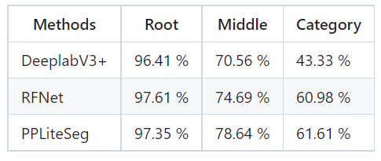
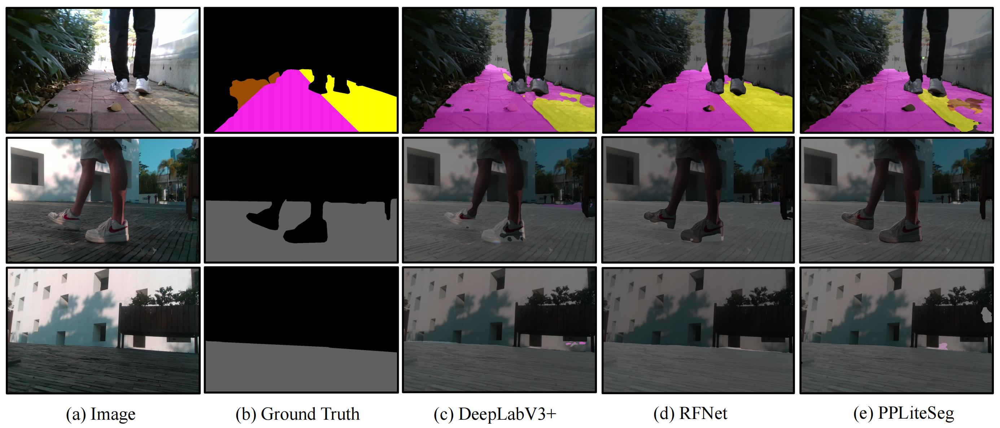

Need a dog seeing eye? A Walk Viewpoint Dataset for Freespace Detection in Unstructured Environments


Wenbin Zou, Guoguang Hua, Guangxu Chen, Zaiyue He, Guangli Liu, Pengfei Chen, Yuyang Li, Huakun Li, Lei Zheng, Shishun Tian*
1. Shenzhen University; 2. Guangdong KLIIP
[Website] [Paper] [Github]
Overview
Freespace Detection (FD) is crucial for robust and safe autonomous navigation. However, existing datasets usually concentrate on structure road environments. The FD in unstructured environments, e.g., walk assistance for the visually-impaired, has been rarely investigated. In this paper, We propose a novel dataset called the Walk Viewpoint Dataset (WVD). Different from the previous datasets, we focus on the walk viewpoint, where FD can provide the potential for improving the walking of visually impaired people. The target regions of WVD are annotated with 20 categories by fine-grained labels, which consist of 3,737 images and depth images. Moreover, we propose a new annotation hierarchy, which allows different degrees of complexity and creates opportunities for new training methods. Finally, our study provides the statistical analysis of label characteristics and baseline analysis, which demonstrates its distinction compared to previous datasets.

Annotated Data:
Category:
With the goal of providing data to enhance unstructure environment navigation, we defined the WVD dataset. WVD contains diverse categories that can easily be spotted from a walk viewpoint, e.g., pedestrian-area and bike-lane. Visually impaired people who are trailed tend to struggle with walking straight, so they tend to touch the Blind to follow over a straightFor mobile robots, the definitions of safe regions are different, e.g., the sidewalk is higher than the bike-lane, and the bike-lane is higher than the road in safety factors. Overall, 20 categories are present in the data.
Images Statics:

Note:
(1) Two inset to better visualize some of categories.
(2) If you can't access the file, please email every author with the title "WVD-SZU Aceess Request...".
Benchmarks
The MIoU Score of Models at Three Levels

Per Categories on The Testing Split


Data Download:
Link:https://pan.baidu.com/s/1KsVTrJcD4vilYRi7jVo7Xg
PassWord: akig
Note: This is a part of dataset.
Citation
@misc{zou2023wvd,
title={Need a dog for seeing eye? A Walk Viewpoint Dataset for Freespace Detection in Unstructured Environments},
author={Wenbin Zou and Guoguang Hua and Guangxu Chen and Zaiyue He and Guangli Liu and Pengfei Chen and Yuyang Li and Huakun Li and Lei Zheng and Shishun Tian},
year={2023},
eprint={},
archivePrefix={arXiv},
primaryClass={cs.CV}
}
Collaborator

License
All datasets and code on this page are copyright by us and published under the Creative Commons Attribution-NonCommercial-ShareAlike 3.0 License.